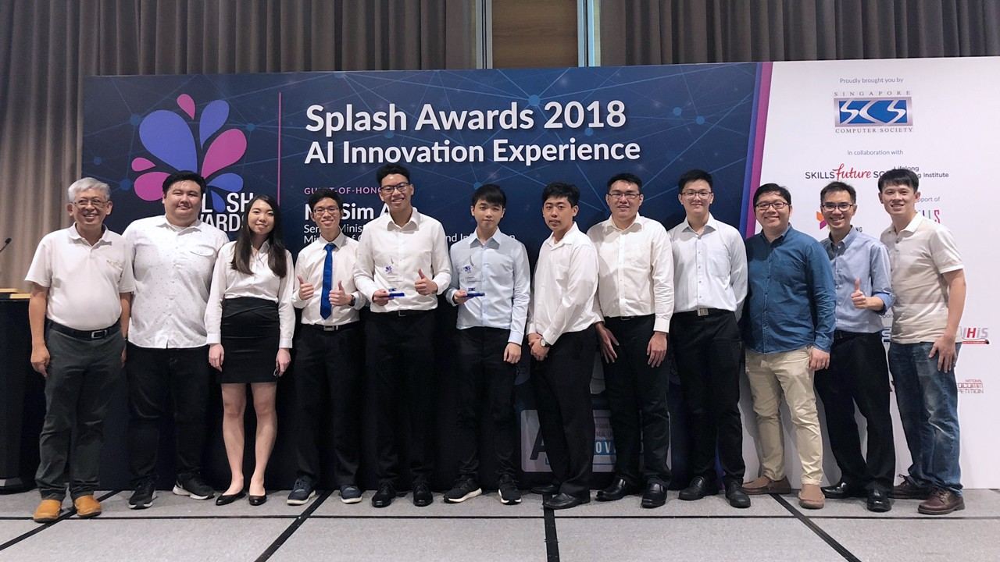
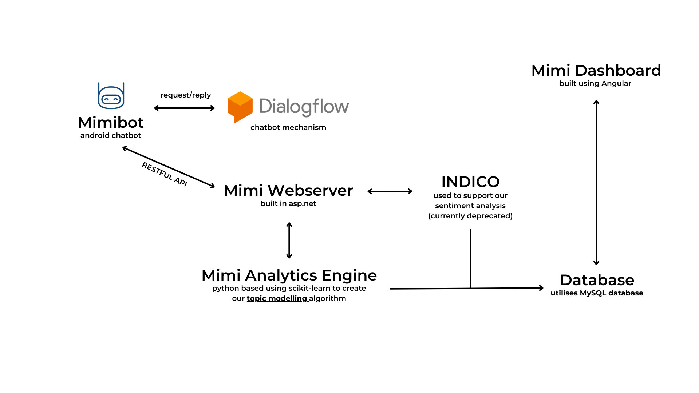

MIMIBOT

Mimibot is a project that I developed back in NYP for the IMDA Splash Award 2018 Competition. In which, we clinched first place.
You can check out our features over at the IMDA page or on the NYP page. Primarily developed using TypeScript, Java and Python
Mimibot is a chatbot designed to facilitate communication between working adults and children, leveraging Natural Language Processing (NLP) to provide valuable insights to parents.
At the core of Mimibot lies XiaoBai, an Android robot. Our objective is to bridge communication gaps through sophisticated NLP techniques.
As children interact with our chatbot, their input is relayed to our Mimi Analytics Engine.

In the initial stages, we developed a prototype Topic Modeling algorithm capable of detecting various topics,
including depression. This process consisted of two main components.
Firstly, we gathered data by scraping several websites, including depression-focused forums, to obtain keywords for categorization. To do scraping, we utilised
Selenium as a tool to help gather data efficiently.
Secondly, we implemented the model in our system. Upon receiving a user input (what the child has expressed), we perform pre-processing tasks
such as lemmatization and tokenization.
Subsequently, using the identified topics within the sentence, we feed the input into our model to predict the relevant topic.
Following the implementation of the core functionality, our attention turned to integrating and presenting the components cohesively. To enhance the user experience, we integrated the Indico sentiment analysis API. This addition empowers parents to gain insights into their children's emotional states.
Lastly, we developed a dashboard that provides parents with visibility into the topics, emotions, and activities their children engage with.
Throughout the development process, we encountered challenges, notably regarding contextual understanding.
The topic modeling algorithm operates on a per-sentence basis, lacking broader context.
For instance, a word like "drive" could be categorized under "transport" or refer to a computer hard drive.
Reflecting on this, we recognize that implementing a contextual understanding mechanism, perhaps through secondary learning layers,
could have significantly enhanced the project's utility.